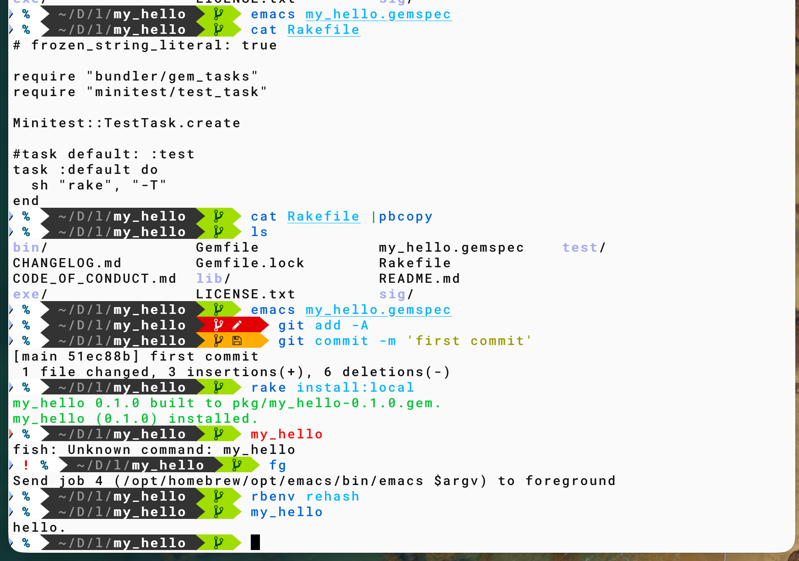

d7 1104 bundle
Table of Contents
prev_button up_button next_button
 |
1. bundle
sudo gem install bundler bundle gem my_hello --exe --test=minitest
env BUNDLE_IGNORE_CONFIG=1 bundle gem my_hello --exe
Creating gem 'my_hello'...
Do you want to generate tests with your gem?
Future `bundle gem` calls will use your choice. This setting can be changed anytime with `bundle config gem.test`.
Enter a test framework. rspec/minitest/test-unit/(none): minitest
Enter a CI service. github/gitlab/circle/(none): github
Do you want to license your code permissively under the MIT license? y/(n): y
Do you want to include a code of conduct in gems you generate? y/(n): y
Do you want to include a changelog? y/(n): y
Enter a linter. rubocop/standard/(none): none
Initializing git repo in /Users/bob/Desktop/lecture_26f/my_hello
create my_hello/Gemfile
create my_hello/lib/my_hello.rb
create my_hello/lib/my_hello/version.rb
create my_hello/sig/my_hello.rbs
create my_hello/my_hello.gemspec
create my_hello/Rakefile
create my_hello/README.md
create my_hello/bin/console
create my_hello/bin/setup
create my_hello/.gitignore
create my_hello/test/test_helper.rb
create my_hello/test/test_my_hello.rb
create my_hello/.github/workflows/main.yml
create my_hello/LICENSE.txt
create my_hello/CODE_OF_CONDUCT.md
create my_hello/CHANGELOG.md
create my_hello/exe/my_hello
Gem 'my_hello' was successfully created. For more information on making a RubyGem visit https://guides.rubygems.org/make-your-own-gem/
> bundle exec exe/my_hello
2. edit lib/my_hello.rb
puts "hello." > bundle exec exe/my_hello
3. rake install:local
# Rakefile
# frozen_string_literal: true
require "bundler/gem_tasks"
require "minitest/test_task"
Minitest::TestTask.create
#task default: :test
task :default do
sh "rake", "-T"
end
> edit my_help.gemspec # TODO => 適当に修正
> git add -A
> git commit -m 'first commit'
#githubでnew repositoryして，それをgit remote add ...
> sudo rake install:local
# (rbenv rehash)
> my_hello # installが無事終わっていることを確認
> which my_hello # でinstall先を確認